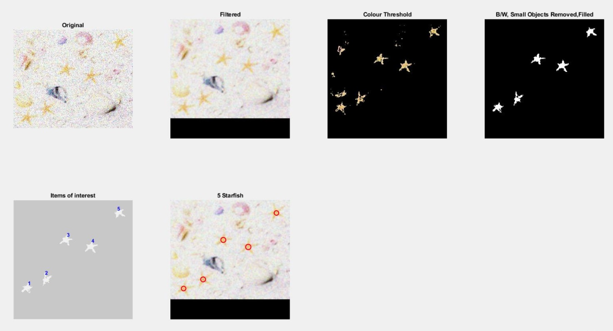

It seems you've managed to find your way onto my webpage.
At a glance
I am a top achieving Msc student with a strong interest in software development, specialized in embedded systems, networking and software development for desktop and web applications. I would consider my strongest attribute to be my work ethic and commitment to constantly trying to improve my own abilities.
My Skills:
-
Communication
Through experiences in teaching, demonstrating, being a student ambassador, 16 years of rugby and 4 years of group projects while at university, ive been able to develop my communication skills and learn how to get my point across and explain things i'm familiar with in a manner that both technical and non-technical audiences can understand.

Ability to learn
Over the last 4 years i've had the benefit of being exposed to various different languages and methodologies in numerous domains.
Strong academic background
Top of my year for my BSc degree, employed by university to complete a research internship over summer, highest grades in all module in trimester 1 for my MSc degree.
Education
Postgraduate | MSc Computer Science (Security and Distributed systems)
Institution :The University of HullPeriod: 2019/2020
Course:here
Brief summary
Description:My MSc degree so far for trimester 1 has seen me progress my abilities with C# to the point where i am comfortable saying i have strong C# coding skills for a programmer at my stage in their development.
Ive been able to cover the basics again and build a strong foundation to enhance my knowledge of principals in OO design and development and ensuring my system design skills adhere to outlined design patterns and practices. Ive gained further experience with client - server networking and many interesting concepts focusing on networking, network attacks and protocols (packet structures, flaws) in network security. Finally in my favorite module Component based architecture, i was able to make use of all my abilities with C# (interfaces, inheritances, threading, app domains) and further them greatly by adding dynamic invocation methodologies using reflection as well as additional experience with unit testing and using fake objects to my tool belt.
In trimester 2, i am currently learning about web development across the stack, from Asp.net and Entity framework to Javascript and Html. I am also learning about many security concepts related to access policies, identifying possible security flaws in code and cryptography.
Trimester 1: (Entirely .net for windows clients)
- Network security
- Object oriented design and development
- Component based architecture
- Distributed applications
- Development project
- Trustworthy computing
- LoRaWAN Public/Private Gateway
Languages:
C# for windows applications, C# with Asp.net(Html, Css, Javascript) for web applications
-Strong experience with C#
Topics:
Visual studio, Brackets, Entity framework code first, MVC, SQLServer, Agile methodologies, Access policies, Design patterns (Domain logic, data access), Packet decoding (IP, UDP, TCP, ICMP, SNMP), Object oriented principals, Reflection, Multi-threading, Strong naming, unit testing, Moq, dependency injection, Sql (Access, Sql server), Win forms, Bootstrap, Git, Trello, GitHub pages
- Highest subject achievement x3 (Network security, Object oriented design and development, Component based architecture)
- Trimester 1 average of 82% (On track for graduation with a 1st)
Network security
Grade: 79%
Topics / Tech stack:Honeypots, CIA triad, OSI model, network management protocols, Packet structure, IP, TCP, UDP, SNMP, Client-server networking, network architecture, Types of attacks, Protocol flaws, C#, Wireshark, visual studio
Description:
For the module Network security, i was able to learn about some advanced concepts in networking (protocols and their flaws, packet decoding, attacks, network configuration) and I was tasked with creating a packet sniffer to decoded all packets (UDP, TCP, ICMP, SNMP) traveling on a selected network (very similar to wire-shark). The project was also focused around development of an SNMP agent - SNMP manager relationship (Traps,MIB,...) and taught me a lot about network management and monitoring, the Asn.1 encoding and packet data-gram structure.
The code can be found here.
In my second piece of coursework for network security i was tasked with writing up a report on network protocol flaws. For this report i worked my way through all protocols used in VOIP and learned about some of the possible areas where each protocol can be penetrated and how to mitigate these possible vulnerabilities (IP/UDP/TCP/SIP/RTP/VOIP). The report had a heavily weighted presentation component to enable us to gain some valuable experience in presenting and explaining networking concepts to a non experienced audience which enabled me to develop further as a public speaker and improve my presentation skills.
- Network management protocols.
- Further networking concepts (packet decoding, protocol flaws).
- How to conduct research to identify vulnerabilities and flaws in systems.
- Types of network attacks and initial mitigations.
Object oriented design and development
Grade: 81%
Topics / Tech stack:C#, Visual studio, garbage collection, enumerated types, interfaces, inheritance, constructors, abstract methods, polymorphism, Dictionaries, XML, SQL (Access), layered architecture, Lambda expressions, LINQ
Description:
This module enabled me to get off to a flying start in the first trimester, as i was already familiar with object oriented principals due to a first year module i took and due to being a demonstrator / teaching assistant for said module while completing this module i was lucky enough to be able to focus on other aspects of the course such as working on my knowledge of sql and databases / XML data structures while refreshing my knowledge of good OOP coding practices and features of c# that i wasnt already familiar with such as Lambda expressions and LINQ.
The coursework allowed me to gain very valuable experience with databases by developing a student transcript / grading system. The system was almost entirely graded on design rather than functionality aligning with the OO nature of the module. I designed my system with a 3 layered approach in mind, keeping my data storage, business logic and UI separate and interchangeable and easily testable with inheritance, polymorphism, abstract methods and interfaces used appropriately.
The code can be found here.
- I furthered my knowledge of SQL and database systems.
- How to use inheritance and interfaces appropriately.
- Strengthened my knowledge of the C# language.
Component based architecture
Grade: 84%
Topics / Tech stack:C#, Visual studio, .Net framework, managed execution environments, garbage collection, CLI, CLR, type handling / type system, Language interoperability, versioning, Signing, Strong naming, Boxing, Delegates, Reflection, Metadata , Unit testing, Dependency injection, Moq, Virtual machines, stacks, app domains, sandboxing
Description:
This comprehensive module covered the inner workings of the .net environment (in terms of performance, GC, memory management (stack vs heap), type system (boxing, type safety), CLI, CLR, Language interoperability) and compared its operations to those of its contemporaries (e.g JVM vs CLR).
Further interesting topics include OO based approaches vs component based approaches, reflection and effective use of metadata alongside assemblies with security methods such as strong naming, versioning and signing of assemblies.
I would label the coursework for this module as one of the most complicated i have completed at university as it had me using everything i had come to learn about C# to create a stack based simple virtual machine. My VM was able to interpret a given simple coding language (including conditionals and debugging features such as break points). The code also made use of app domains (The VM would run in one app domain and the executed program in a another) and lead to scenarios such as communication of objects between app domains using serialization, MarshalByRefObject and delegates.
I found this piece of coursework to be my all time favorite while at university as it challenged me significantly in aspects i thought to be completely familiar with such as threading and interfaces. After completion of the coursework i felt i had a far better understanding of so many concepts and how to use them appropriately and it armed me the the ability to dynamically create instance of objects from separate assemblies using reflection which has proven to be a very powerful technique in other pieces of coursework.
The code can be found here.
(JitCompiler.cs/ SvmVirtualMachine.cs are good starting points)
- How to effectively make use of unit tests
- How use interfaces to create suitable fakes / stub objects using Moq
- The component based approach and use of reflection to examine metadata within assemblies and dynamically creating instances of methods based on this metadata
- Better use of threading and delegates
- Security concerns around metadata and the information available to other programs
- Technical details of .net compilation / execution processes
Show / Hide (Postgraduate)
Undergraduate | BSc Computer Science (Embedded Systems)
Institution :The University of HullPeriod: 2016/2019
Brief summary
Description:My undergraduate degree allowed me to gain a lot of exposure to many different languages and techniques for solving an array of different problems in different domains.
Some of the types of systems ive developed:- An algorithm to solve Sudoku puzzles using linked lists in C++.
- An image processing pipeline to count starfish in different images in MATLAB.
- Working with micro controllers and development boards in C / C++ to create a climate control system and a bugler alarm system using numerous components and sensors.
- Client - server networking system in C#.
- A robot movement simulation system utilizing neural networks/ machine learning to predict the direction of next step in Python.
- A puzzle mobile app for android developed in android studio in Java.
- For my dissertation, an automated system that was capable of controlling a drone to travel to a desired set point in a 3 dimensional space supported by a camera system.
- And many more C# systems...
From primarily C# in my first year, i was able to build upon the programming knowledge i already had from high school. By choosing advanced programming modules in my first year i was shown a far more design oriented and structured side of programming while learning all of the basics.
In my second year i was introduced to C++ in the module "Advanced programming" where i was exposed to data structures like linked lists and b trees and more complex methodologies. Through the modules "System design, analysis and processes", "Software engineering", "Networking and UI design" and "Agile software development" i was able to continue developing in C# and experience many different group and solo projects all furthering my knowledge of the design process and the types of diagrams, methodologies and techniques (Networking, databases, SQL, XML) used to increase the effectiveness of communication and quality of deliverables in the software development life-cycle.
In my third year i was developing solely in C / C++ and Python and developed many complex and interesting systems all detailed below.
Second Year:
- Advanced programming
- Agile software development
- Electronics and interfacing
- Networking and UI design
- Software engineering
- System design, analysis and processes
- Computational science
- Computer vision
- Embedded systems development
- Mobile devices and applications
- Dissertation - Virtual trajectory using flying drones
Languages:
C, C++, Python, C#, Java, Matlab
Strong experience with C and Python
Topics:
MPLAB X, Eclipse, Visual studio, PyCharm Vicon vision system, Open source software, Autonomous systems, Machine learning, Pic, QL200 development board, Arduino Uno, Kanban, Scrum, UML Diagrams (activity, sequence, flow, use case...), Peer programming, TDD, Tracablitiy matrix, Unit Tests, Parasoft, Source control (SVN), Networking (TCP/UDP, client server architecture, Sockets), Qt UI design, Linux Ubuntu
Awards:
- Best departmental academic performance 2018/19 Computer Science.
- Highest subject achievement x3 (Agile software development, Embedded systems development, Mobile devices and applications).
- 1st class with hons BSc Computer Science (Embedded Systems).
Embedded Systems
Grade: 81%
Topics / Tech stack:Pic16f877a, C, Assembler, manufacturer datasheets, data transfer bit operations, memory leaks, MPLAB X, drivers, firmware, registers, Pic architecture
Description:
My degree’s namesake module is one that brought with it many challenges that pushed me to produce better quality and far more efficient code. Due to the resource constraints of the development boards used in assessment (QL200 Pic16) only memory efficient approaches could be used to successfully complete the coursework assigned for this module. Within the coursework I was tasked with creating C drivers to interface with 5 different components and then make use of those components to create custom firmware for the board with climate control system features.
Through over 100 hours of console-less debugging I feel I gained a considerable knack for troubleshooting errors without the need of an explicit arrow pointing at the error (although i'd never turn down access to breakpoints). The focus on efficiency also helped me greatly improve as a programmer and allowed me to get comfortable using pointers.
All code submitted for this coursework including reports are linked here
- How to read manufacturer data sheets.
- Debugging and testing techniques (Traceability matrix).
- Efficient low level coding techniques using C.
- How to create drivers to interface with new components.
Mobile Devices and Applications
Grade: 90%
Topics / Tech stack:Android Studio, Java, NFC vs RFID, Cellular telephony, mobile sensors, mobile network communications
Description:
The theoretical side of this module was focused around mobile technologies with a heavy emphasis on mobile communication systems (2 way radio - 4th generation pure IP networking, bluetooth, Zigbee, RFID, NFC) and their topologies as well as mobile device sensors / components, how exactly they work and how to make use of them.
On the practical side of this course i was taught how to develop apps for android devices in Android studio using Java.
- Networking concepts related to mobile technologies
- The notion of ubiquity and its concepts
- The basics of how to code and test in Java for mobile applications
- Gui design for mobile applications
- My biggest take away was a strong interest in mobile communication systems which lead me to my MSc degree in Network security
Computer Vision
Grade: 64%
Topics / Tech stack:
MATLAB, Image normalization, image processing pipelines, colour models, filters (mean, median) and convolution used to remedy noise (Salt and pepper, guassian), region growing, region growing, morphology(dilation, erosion), feature detection, contour models, active shape models and convoluted neural networks
Description:
Within this course i was taken on a journey through different types of image capturing sensors, colour models (RGB,HSV,..), processing pipelines, and concepts used to process meaningful data out of images.
For this coursework i was tasked with creating an image processing pipeline that was able to count the starfish in a given image which was quite challenging but taught me a lot about recognizing patterns in data, automating processes in a staged approach and the use of neural networks.
I dipped slightly in quality for this modules coursework as it was conflicting with my dissertation. None the less the code for my image processing pipeline can be found here and my successful results are shown below.
- Image processing techniques
- How to make use of CNN's for feature detection
- How to use MATLAB

Computational Science
Grade: 76%
Topics / Tech stack:Python, Pycharm, Neural networks, algorithms
Description:
This module coverer many topics in the neural network / machine learning domain and how to go about modeling dynamic systems.
In this module i got hands on experience with algorithms, ideologies and mathematic formulas such as Eulers method, box-Muller, random search algorithms, monte carlo simulations, derivatives, activation functions, sigmoids, BP nets, Hopfield model and perception training algorithms.
In the coursework for this module i was tasked with developing a system that could simulate a robots movement and then add additional functionality to the system to predict the next position of the robot before taking its next step.
- An increased ability with translating formulas into algorithms.
- Modeling systems.
Dissertation
Grade: 90%
Topics / Tech stack:UDP networking, Drones, PID control, Embedded systems, Sliding window, Python, Pycharm, Vicon vision system, Linux, Virtual machines, Automated decision system, open source, C++, Eclipse
Description:
Below is the abstract i submitted for my dissertation report:
"Herein lies the background information and summarized findings of experiments, research and software development conducted to control the open source Crazyflie 2.0 drone (developed by Bitcraze) supported by a vision system (Vicon Tracker) which gives real time positional data that is processed through a regulated PID loop to produce torque values to alter the propeller speed of the drone. To allow users to interact with the
device and specify a setpoint/trajectory for the drone to travel to, the following needs to be implemented, a client must be designed and within networking means must be used to intercept positional data from the Vicon
server, this data must then be fed into a PID loop and transformed into a final value for propeller thrust. This
project has been conducted to offer some insight into the basic development of regulatory systems and object
tracking to give readers a foundation to build upon with their future work."
This report can be found here.
This topic which lead to me being employed by the university under a research internship is one that i speak of very dearly and am enthusiastic about. I spent over 800+ hours on the topic learning about concepts such as quad copter flight dynamics, seemingly complex mathematics, open source libraries and knowledge gained from near to every module i had taken at university to complete the project. I relished the constant challenge of not knowing what the next issue would be until it appeared, and I enjoyed the work that was based around a system built upon open source software that had next to no previous implementations to meet my specific requirements. I know that regardless of the topic i will feel this way and enjoy my work as the parts of it that I enjoyed where in no way specific to the project but were entirely based around the constant challenges i faced which forced me to learn something new everyday.
A link to the code and report can be found
here
*it is worth noting that in my dissertation i focused on movement in a single dimension (Up and down), where as i was able to fully implement a system to control the drone in all 3 dimensions during my internship.
Traveling in 3 dimensions was far more complex as it required the use of the developed PID controller for each axis (thrust, pitch, yaw, roll) and brought along with it many other interesting physics based issues such as inertia
- UDP networking concepts.
- Algorithmic implementation skills based around mathematical models.
- Steps for creating custom firmware for embedded devices in C++.
- How to make use of open source libraries and their documentation to accomplish tasks.
- How to use Linux and some terminal commands.
- How to use virtual machines in a VirtualBox environment.
- Utilization and modification of known implementations to solve tasks (Sliding window for averaging).
- quad copter flight dynamics.
- Critical research and appraisal skills.
- Additional concepts and how to implement them in the Python.
Work history
Title: Teaching assistant / Lab Demonstrator
Period: September 2019 - Present
Employer: The University of Hull
Engaging, assisting and supporting students within labs, identifying errors in created software, explanation of methodologies and their use cases.
Modules included:- Embedded systems software development (C, Assembly)
- Programming and algorithmic thinking (C#)
- Object oriented programming and principals (C#)
This third year module taught by my dissertation supervisor and mentor Dr Yongqiang Cheng was quite challenging.
The course covered sections in both C and Assembler revolving around creating drivers for individual components which required me to have a thorough understanding of the course material to be able to implement methods / identify issues in both languages. This combined with a new component being introduced every week (Lcd, 4x4 key matrix, system clock, sensors,..) meant i would need to be familiar with the new component and all components before it to do my job well as some students would be up to 4 labs behind.
Due to the small size of the class (+-20 students) i was able to provide personal 1-1 help in the 2 hour lab sessions and assist students when necessary.
This module and my experiences demonstrating / teaching for it taught me that i will not always know the answer to a question that is asked of me immediately, and thats okay! Sometimes the only way to solve a problem is to sit down and work at it for 10 - 15 minutes, none expects every questions you ask of them regarding code they've written to be answered in 2 sentences.
Along with that soft skill i also greatly improved my knowledge of C for embedded devices and abilities to read datasheets.
Class size: +-20 (1 demonstrator (me), 2 hour sessions)
This first year, first / second trimester module covered the absolute basics of C# (Variables, Arrays, Conditionals, String manipulation, Lists, XML, Methods,...).
In contrast to the above Embedded systems module, there was not a single question i could not solve / answer in under 5 minutes for this module as the course was in C# and i am very confident in my ability to code in C#. I also feel i could explain things very well in this module as i had a very clear understanding of how they worked at this point.
Class size: +-100 (3 demonstrators, 2 hour sessions)
This first year, second trimester module covered slightly more advanced topics such as dictionaries, classes, interfaces, inheritance , access restrictions and general OO principals.
I enjoyed teaching this module, as it was long enough to get to everyone if they were really struggling and students would ask me many questions as they were familiar and comfortable with me at this point as i taught them for "Programming and algorithmic thinking".
Due to the amount of demonstrators i was also able to relax a little more while working, as if there was ever the odd question on "how do add your .vs file to the ignore list using tortoise svn" and i was wearing my "Sponsored by Github" hat, i could rely on one of the other demonstrators to quickly solve the issue and likewise could they trust me on many occasions. I found it a great team environment with each of us confident in the others abilities.
Class size: +-100 (4 demonstrators, 4 hour sessions)
Title: Student Ambassador
Period: September 2019 - Present
Employer: The University of Hull
Answering any question's students may have regarding postgraduate study at University of Hull open days.
Title: Research Internship
Period: June 2019 - September 2019
Employer: The University of Hull
Tasked with furthering the work completed within my autonomous drone dissertation topic. The final increment of the software was able to make decisions based upon positional data to travel gradually to and hold its position in a 3-dimensional space relative to its current position using a Crazyflie 2.0 drone.
Drones, Autonomous control systems, PID, UDP networking ,Virtualisation, Open Source software.
Contact details
Tel: 07764413708
Email:
Git : https://github.com/Ieaun
LinkedIn: www.linkedin.com/in/ieaun-roberts/